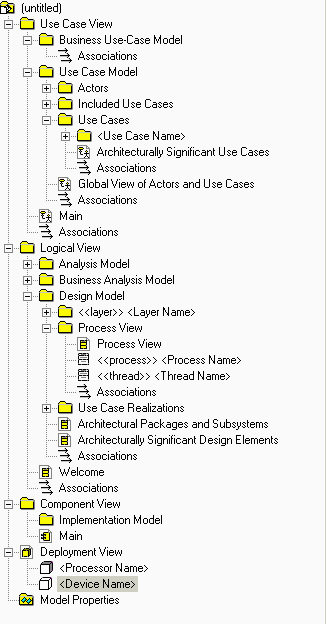

Purpose
This tool mentor describes how to use Rational SoDA to create a Business Analysis Model Survey. SoDA automates the
generation of the report so that it is created quickly and accurately. You can generate a Business Analysis Model
Survey with either the Microsoft Word or Adobe FrameMaker version of SoDA. This works only if the Rational Rose model
follows the structure and naming convention for the Business
Analysis Model.
Related Rational Unified Process information:
Overview
This tool mentor is applicable when running Windows 2000, NT 4.0, Windows XP, Solaris, or HP-UX.
To create a Business Analysis Model Survey using SoDA, use the procedure for your version of the product:
Use Rational SoDA/Word to generate a Business Analysis Model Survey
-
In Rational Rose, open the model you want to document.
-
Click Report > SoDA Report.
-
When the list of available reports appears in SoDA, select Rational Unified Process Business Analysis Model Survey.
-
Click OK to generate the report.
Using Rational SoDA/FrameMaker to generate a Business Analysis Model Survey
-
From the FrameMaker button-bar, click New. Double-click SoDA, then double-click RoseDomain and choose the
RUPBusinessObjectModelSurvey.fm template.
-
Edit the Connector and enter the name of the model file.
-
Click File > Save As to save the template to a personal or project directory.
-
Click SoDA > Generate Document.
-
Review the generated document.
The next time you want to generate this same document, simply open the document and select SoDA=>Generate Document.
Structure
and naming convention for the Rational Rose model
|

|
Elements from the Business Analysis Model are extracted into the Business Analysis Model Survey.
|
|